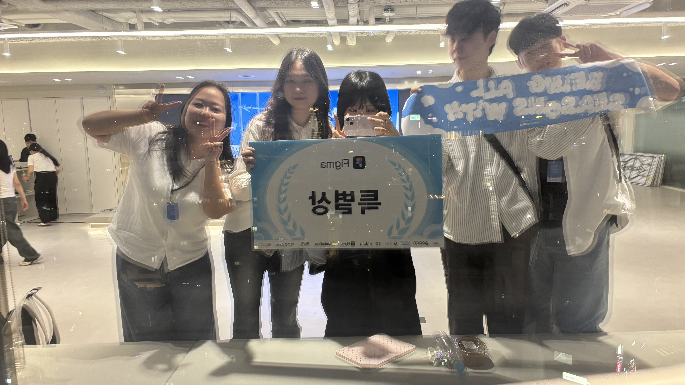

구름톤 유니브 해커톤(시즌톤)을 마치며
👀 시작
이번 여름, 8월부터 9월까지 두 달 동안 구름톤 해커톤에 참여했다.
주제는 "청년 금융 문해력을 높일 수 있는 솔루션".
팀은 기획 1명, 디자인 1명, 프론트엔드 1명, 그리고 백엔드 2명으로 구성되었고, 나는 백엔드 개발을 맡았다.
✨ 좋았던 점
짧은 시간이었지만, 끝까지 실행되는 서비스를 완성했다는 점이 가장 큰 보람이었다.
코드의 품질은 부족했을지 몰라도, 돌아가는 결과물을 만들고 팀과 함께 성취감을 나눈 경험은 정말 값졌다.
특히 기억에 남는 건 협업 경험.
기획자, 디자이너, 개발자가 모여 피그마(Figma)를 단순한 디자인 툴이 아니라,
회의 기록과 아이디어 공유, 피드백까지 담는 팀 협업의 허브로 활용했다.
회의 때마다 누구든 자유롭게 의견을 포스트잇처럼 남기고, 그걸 함께 보며 바로바로 토론하고 발전시켰다.
그 덕분에 우리 팀은 "피그마를 가장 잘 활용한 팀"이라는 수상까지 하게 되었다.
또, 이번 프로젝트에서는 "무조건 안 된다" 대신 "이건 어렵지만 이런 대안은 어때?"라고 말하려고 노력했다.
예를 들어 팀원이 원했던 모의 주식 기능은 시간상 힘들다고 판단했는데, 대신
"뉴스를 보고 퀴즈를 푸는 플로우"를 제안했고, 기획자가 더 발전시켜 기능으로 완성할 수 있었다.
이 경험 덕분에, 차선책을 이야기할 수 있는 개발자가 되고 싶다는 내 목표를 실제로 해낼 수 있었다.
😅 아쉬웠던 점
물론 아쉬움도 많았다.
테스트 코드
평소엔 꼭 작성하려고 하지만, 해커톤에서는 속도에 치이다 보니
제대로 된 테스트 없이 운영에 반영한 부분이 많았다. 그래서 불안감도 꽤 있었다.DDD와 아키텍처
Domain-Driven Design을 적용해보고 싶었는데, 이해가 충분하지 않다 보니
도메인들이 서로 얽히는 이상한 구조가 되었다. 결과적으로 원했던 "결합도가 낮은 코드"와는 거리가 있었다.비동기 처리
스레드풀 사이즈나 타임아웃 같은 부분을 제대로 잡지 못해서,
"돌아가긴 하지만 불안정한 코드"가 되어버렸다.사용자 경험
해커톤 후반부로 갈수록 "입상"에 집중하다 보니 기능을 계속 늘려나갔다.
그런데 막상 발표에서 피드백을 듣고 보니,
사용자 입장에서는 *"이 서비스가 정확히 뭘 해결하려는 건지 잘 모르겠다"*는 이야기를 들었다.
그 순간 머리를 맞은 것처럼 "아, 우리가 너무 우리만의 시선으로 프로젝트를 봤구나" 하고 깨달았다.
복잡한 기능보다 단순하지만 문제를 명확히 해결하는 것이 훨씬 중요하다는 교훈을 얻었다.
📚 배운 점
좋은 협업은 도구와 태도에서 나온다
피그마 하나로도, 그리고 적극적인 팀원들의 시너지로도 이렇게 원활하게 소통할 수 있다는 걸 직접 경험했다.아키텍처는 개념이 아니라 실전에서 다져져야 한다
DDD나 비동기 처리 같은 건 책에서 아는 것과 실제 프로젝트에 적용하는 건 정말 달랐다."안 된다" 대신 "이건 어때?"
차선책을 제시하는 태도가 팀워크를 더 좋게 만든다는 걸 몸소 느꼈다.사용자의 눈으로 보자
결국 서비스는 사용자가 이해하고 쓸 수 있어야 한다.
개발자 입장에서 멋진 기능도, 사용자가 쓰기 어렵다면 무의미하다.
🔭 앞으로
이번 해커톤에서 만난 좋은 팀원들과, 개인 프로젝트를 이어가기로 했다.
이번 경험을 바탕으로:
- DDD와 아키텍처를 더 깊이 공부하고 적용하기
- 테스트 코드를 꼼꼼하게 작성하기
- 비동기 처리와 성능 최적화 이해도를 높이기
- 무엇보다, 작은 문제라도 명확하게 정의하고 집중적으로 해결하는 프로젝트를 해보기
💡 마치며
이번 구름톤 해커톤은 피그마상을 제외한 입상은 하지 못했지만,
그보다 더 값진 걸 얻었다.
좋은 팀원을 만나 함께 성장했고, 서로의 이야기를 귀 기울여 듣는 태도와 소통 방식을 배울 수 있었다.
그리고 개발자로서 내가 어떤 태도를 가져야 하는지, 다시 한번 돌아볼 수 있는 시간이었다.
다음 프로젝트에서는 이번에 배운 것들을 잘 녹여내서,
더 작지만, 더 단단한 서비스를 만들어보고 싶다.
📸 함께 고생한 우리팀

댓글